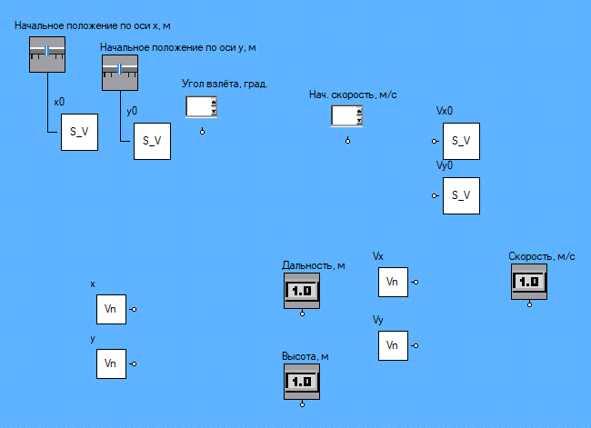
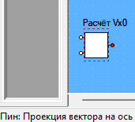
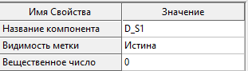

Структура многоуровневой компьютерной модели задачи описана в ряде работ, например, [1].
Рисунок 1 – Структура многоуровневой компьютерной модели физической задачи
Задача о движении в атмосфере Земли тела, брошенного под углом к горизонту, может быть разделена на несколько уровней детализации:
1) идеальный полёт тела, 2) полёт тела с учётом сопротивления воздуха при его постоянной плотности, 3) полёт тела с учётом изменения его аэродинамических характеристик в зависимости от его скорости, 4) полёт тела с учётом изменения плотности воздуха с изменением высоты полёта, 5) полёт тела с учётом изменения воздействующей на него силы тяжести с изменением высоты полёта, 6) полёт тела с учётом кривизны Земли [2].
Рассмотрим реализацию представления №1 данной задачи. Некоторые другие уровни детализации модели в СМ МАРС представлены в работах [3, 4].
В случае полёта в безвоздушном пространстве (имеем «идеальный» полёт) движение тела можно описать следующей системой уравнений (пригодной для итерационного решения):
(1)
Для построения модели откроем СМ МАРС и создадим новую схему (Рисунок 2).
Рисунок 2 – Интерфейс СМ МАРС
После этого появится пустая схема с тремя слоями: 1) объектным (C-слой) – для моделей физического поведения объектов, моделей объекта управления и пр.), 2) логическим (L-слой) – для моделей систем управления, моделей логического (алгоритмического) поведения объектов и сценариев проведения вычислительного эксперимента (включая алгоритмы обработки и преобразования данных), 3) визуального (V-слой) – для построения графических интерфейсов управления моделью (Рисунок 3).
Рисунок 3 – Созданная пустая схема
Построение модели начнём с определения входных и выходных параметров и переменных модели. Для этого переключим окно схемы на отображение V-слоя модели (Рисунок 4), так как он используется для задания интерфейса управления моделью.
Рисунок 4 – Выбор визуального слоя модели
Входными параметрами в данной задаче являются: начальное положение по осям OX, OY, начальная скорость, угол броска тела. Масса тела согласно допущению («идеальный» полёт тела) в уравнении (1) не учитывается. Выходными переменными модели являются: текущее положение тела по осям OX, OY, текущая скорость. Для задания входных параметров модели будем использовать регуляторы (положение по осям OX, OY), цифровые табло со спином (начальная скорость и угол полёта). Выбор именно этих компонентов не является принципиальным и имеет цель продемонстрировать использование различных компонентов. Для отображения значений переменных будем использовать цифровые табло.
Разместим на V-слое схемы цифровое табло со спином (Рисунок 5).
Рисунок 5 – Размещение цифрового табло со спином на V-слое
Зададим ему название, текущее значение и его допустимые верхние и нижние границы (Рисунок 6) в специальном окне компонента, располагаемым по умолчанию слева (вкладка «Свойства»).
Рисунок 6 – Ввод параметров цифрового табло со спином
Разместим ещё одно цифровое табло со спином (и настроим его) и индикатор с прямоугольным бегунком (Рисунок 7).
Рисунок 7 – Размещение регулятора на V-слое
Введём параметры регулятора: название, минимальное, максимальное и текущее значения (Рисунок 8). Дополнительно можно настроить и другие параметры компонента.
Рисунок 8 – Ввод параметров регулятора
Добавим и настроим ещё один регулятор для задания положения тела до запуска (Рисунок 9).
Рисунок 9 – Расположение регуляторов и цифровых табло
Добавим на схему цифровое табло (Рисунок 10).
Рисунок 10 –Размещение цифрового табло (индикатора)
Введём параметры цифрового табло (Рисунок 11). Параметры «Действительная часть» и «Мнимая часть» заполнять не требуется – в них будут подставляться измеряемые в схеме значения автоматически.
Рисунок 11 – Ввод параметров цифрового табло
Итоговый вариант размещения компонентов для управления моделью представлен на рисунке (Рисунок 12).
Рисунок 12 – Размещение компонентов на V-слое
Далее переключим модель на C-слой для задания основной компонентной цепи модели, описывающей физику движения (Рисунок 13).
Рисунок 13 – Переключение схемы на C-слой
Для задания начальных значений переменных в моделях с обыкновенными дифференциальными уравнениями (ОДУ) используются компоненты «Установка начального значения». Разместим такой компонент на схеме (Рисунок 14).
Рисунок 14 – Размещение компонента «Установка начального значения»
Введём название размещённого компонента начальное положение объекта x0 (Рисунок 15). Само значение переменной будет подаваться на вход отображению данного компонента, автоматически располагаемого на L-слое схемы.
Рисунок 15 – Ввод параметров компонента «Установка начального значения»
Разместим и настроим другие компоненты такого же типа (Рисунок 16).
Рисунок 16 – Размещение компонентов на C-слое
Для измерения полученного в ходе решения на каждой итерации математической модели, состоящей из ОДУ, и передачи их на L-слой (где возможна дальнейшая их обработка или передача на V-слой для отображения пользователю) будем использовать компоненты измеритель Vn – измеритель потенциальной переменной.
В СМ МАРС переменные делятся на 2 вида: потоковые (сила тока в электрических схемах, сила в задачах механики и т.д.) и потенциальные (напряжение в электрических схемах, скорость в задачах механики и т.д.). Так как в данном примере модель будет строиться с помощью универсальных математических панелей (обладающих информационными потенциальными связями), а не компонентами типа модели твёрдого тела с предопределённой в нём математической моделью (в которой присутствуют как потоковые, так и потенциальные связи), будем использовать измеритель потенциальной переменной.
Разместим такой компонент на схеме (Рисунок 17).
Рисунок 17 – Размещение компонента «Измеритель потенциальной переменной»
Необходимо правильно настроить указанный компонент, указав количество элементарных и информационных потоков и отметку о том, что связь не является энергетической.
Рисунок 18 – Ввод параметров компонента «Измеритель потенциальной переменной»
Для того, чтобы не вводить заново параметры для повторяющихся компонентов, можно путём вызова контекстного меню (нажатием правой кнопкой мыши (ПКМ) по компоненту) скопировать компонент и вставить его в любом месте этой (или любой другой открытой) схемы СМ МАРС.
(!) Будьте внимательны – при вставке компонента на схему активным (выделенным) компонентом остаётся скопированный (а не вставленный), поэтому редактирование свойств компонента в меню слева (например, Рисунок 6) приведёт к изменению параметров скопированного, а не вставленного компонента. Чтобы этого избежать, перед вводом параметров компонента выберите нужный компонент.
Рисунок 19 – Копирование объекта через контекстное меню
Для удобства соединения компонентов или оформления внешнего вида компонентной цепи можно поворачивать компоненты (Рисунок 20).
Рисунок 20 – Поворот компонента через контекстное меню
Выполним размещение компонентов согласно изображению (Рисунок 21).
Рисунок 21 – Размещение компонентов-источников и -измерителей на C-лое
Разместим источник физической величины для задания константы – ускорения свободного падения (Рисунок 22).
Рисунок 22 – Размещение компонента «Источник физической величины»
Введём параметры компонента (Рисунок 23).
Рисунок 23 – Ввод параметров компонента «Источник физической величины»
Сохраним схему (Рисунок 24) на локальном компьютере, чтобы можно было открыть её позднее или на случай непредвиденного завершения работы. Рекомендуется периодически сохранять схему во время работы, так как в демонстрационной версии СМ МАРС опция автосохранения схемы отсутствует.
Рисунок 24 – Меню сохранения схемы модели
Разместим математическую панель (Рисунок 25), которая будет содержать математическую модель полёта тела (1).
Рисунок 25 – Размещение компонента «Математическая панель»
При двойном нажатии на математическую панель открывается окно редактора математических формул, в которое можно ввести математическую модель в аналитическом виде, состоящую из алгебро-дифференциальных уравнений. Такое окно имеет интерфейс и принцип работы схожий с математическим пакетом Mathcad – подробнее см. в работе [5]. Для ввода дифференциального уравнения выберем соответствующий элемент меню (Рисунок 26).
Рисунок 26 – Интерфейс редактора математических моделей: выбор дифференциального уравнения
Введём уравнение в появившейся формуле с подстановочными масками для ввода (Рисунок 27).
(!) В некоторых операционных системах сворачивание и разворачивание окна может привести к его закрытию. Рекомендуем сохранить схему заранее.
Рисунок 27 – Ввод дифференциального уравнения в маску
Навигация по выражению осуществляется стрелками и клавишей «пробел» как в пакете Mathcad (Рисунок 28).
Рисунок 28 – Манипуляции с курсором (стрелками «влево», «вправо» и «пробелом»)
Аналогичным образом добавим остальные уравнения в систему ОДУ (Рисунок 29).
`
Рисунок 29 – Введённая система уравнений
В итоге получаем компонент с автоматически сформированными узлами для связей (Рисунок 30).
Рисунок 30 – Компонент с системой уравнений на схеме
Выполним соединение компонентов. Для этого наведём курсор на узел компонента, зажмём левую кнопку мыши (ЛКМ) и проведём курсор к узлу соединяемого компонента, затем отпустим (Рисунок 31).
Рисунок 31 – Соединение компонентов (зажать ЛКМ на узле и протащить до соединяемого узла)
В результате получаем связь (Рисунок 32).
Рисунок 32 – Соединение компонентов с созданием узла на связи (зажать ЛКМ на узле и протащить до ветви)
Для соединения нескольких узлов вместе необходимо сформировать внешний узел. Для этого нужно провести от неприсоединённого узла зажатой ЛКМ к сформированной связи и отпустить ЛКМ. Другой вариант создания узла на связи – ЛКМ на связи с зажатой клавишей CTRL.
Рисунок 33 – Сформированные связи с узлом
Соединим компоненты C-слоя (Рисунок 34).
Рисунок 34 – Сформированная компонентная цепь на C-слое
Переключимся на L-слой. На нём уже расположены отображения компонентов, размещенных ранее на V- и C-слое (Рисунок 35). Изначальное положение компонентов может отличаться в зависимости от их координат расположения их отображений на C- и V-слоях (пользователь может свободно менять положение компонентов).
Рисунок 35 – Отображения на L-слое компонентов, ранее размещенных на V-слое
Разместим компоненты для дальнейшего соединения (Рисунок 36).
Рисунок 36 – Расположение компонентов на L-слое
Соединим компоненты для передачи начальных значений с V-слоя на C-слой (Рисунок 37).

Рисунок 37 – Соединение регуляторов V-слоя с компонентами C-слоя для установки начальных значений
Добавим компонент для перевода угла из градусов в радианы (Рисунок 38).
Рисунок 38 – Размещение компонента для перевода угла из градусов в радианы
Добавим компонент для расчёта проекции вектора скорости на оси X, Y (Рисунок 39)
Рисунок 39 – Размещение компонента для расчёта проекции вектора скорости на оси X, Y
Введём параметры компонентов для настройки расчётов значений проекций вектора скорости (Рисунок 40).

а) б)
Рисунок 40 – Ввод параметров компонентов «Проекция вектора на ось»
а – проекция на ось OX, б – на ось OY
При наведении на узел в левом нижнем углу возникает подсказка с отображением названия узла (Рисунок 41). Для корректного соединения компонентов связями можно ориентироваться на данную подсказку. Неправильное соединение компонентов может привести к ошибкам в расчётах или в работе модели.

а) б) в)
Рисунок 41 – Отображение подсказок об узлах в левой нижней части экрана (при наведении на узел)
Соединим компоненты для расчёта проекций вектора скорости (Рисунок 42).
Рисунок 42 – Соединение компонентов на L-слое для расчёта проекций скорости
Данные, поступающие с C-слоя хранятся в формате комплексного числа – t + i*y – где y – измеренное значение (мнимая часть комплексного числа), t – момент времени измерения (вещественная часть комплексного числа). На L-слое блокам обработки надо явно указывать, какую из двух составляющих нужно обрабатывать. Для этих целей можно использовать математические компоненты: для передачи измеренного значения – компонент «Мнимая часть», которые принимает на вход комплексную переменную и передаёт только её мнимую часть, для передачи времени измерения – «Вещественная часть».
Разместим компонент «Мнимая часть» на схеме (Рисунок 43).
Рисунок 43 – Размещение компонента для отсечения параметра «Время» из связи
Разместим компонент «Вектор по проекциям», чтобы по измеренным на C-слое значениям проекций скорости Vx и Vy сформировать значение вектора скорости (Рисунок 44).
Рисунок 44 – Размещение компонента для формирования вектора скорости на L-слое из проекций
Соединим расположенные компоненты (Рисунок 45).
Рисунок 45 – Соединение компонентов на L-слое для формирования вектора скорости
Соединим другие компоненты, для передачи на цифровые табло V-слоя измеренных значений положения тела по осям OX, OY, используя компонент «Мнимая часть» (Рисунок 46).
Рисунок 46 – Соединение компонентов для вывода значения переменных на цифровые табло V-слоя
Для построения графика y(x) добавим на схему компонент «Источник комплексной переменной» для формирования данных для компонента-графика (Рисунок 47).
Рисунок 47 – Размещение компонента для формирования данных для графика
Соединим компоненты (Рисунок 48). На верхний узел подаётся значение, отображаемое по ординате графика (y), на нижний – по абсциссе (x).
Рисунок 48 – Соединение компонентов для формирование данных для построения графика
Добавим на схему компонент-график (Рисунок 49).
Рисунок 49 – Размещение компонента для построения графика
Соединим компоненты (Рисунок 50).
Рисунок 50 – Соединение компонентов для построения графика
Перед запуском модели на расчёт необходимо ввести параметры расчёта. Для этого откроем окно параметров моделирования (Рисунок 51).
Рисунок 51 – Переход в меню настройки параметров моделирования
На вкладке «Динамика» выберем параметры анализа модели (Рисунок 52). Зададим конечное время (например, 30 с), минимальный и максимальный шаги, определяющие шаги интегрирования. При их равенстве друг другу модель будет рассчитываться с постоянным шагом.
Рисунок 52 – Ввод параметров анализа модели
Перейдём на V-слой для запуска модели и отслеживания хода её работы по цифровым табло (Рисунок 53).
Рисунок 53 – Переход на V-слой для запуска модели
Запустим модель на расчёт кнопкой (Рисунок 54).
Рисунок 54 – Запуск модели на расчёт
После запуска модели на расчёт появится окно графика, компонент которого был расположен на L-слое ранее. Для одновременного отображения V-слоя и графика можно использовать меню управления положением окон (Рисунок 55).
Рисунок 55 – Настройка размещения окна графика над окном схемы
После нажатия кнопки «Горизонталь» окна расположатся следующим образом (Рисунок 55).
Рисунок 56 – Результаты размещения окон
На этом процесс моделирования задачи завершён. Далее рассмотрим дополнительные нюансы.
Как видно из предыдущего рисунка, расчёт модели завершился раньше, чем ожидалось (тело не коснулось Земли). Скорректируем время расчёта модели (Рисунок 57).
Рисунок 57 – Корректировка параметров модели
Результаты моделирования после корректировки представлены ниже (Рисунок 58). Теперь расчёт продолжаются после пересечения координаты y = 0.
Рисунок 58 – Результат работы модели при скорректированных параметрах
Если необходимо реализовать сценарий анализа модели, то можно построить соответствующую компонентную цепь на L-слое. Например, создадим условие – чтобы анализ модели завершался тогда, когда тела пересечёт линию y = 0. Перейдем на L-слой (Рисунок 59).
Рисунок 59 – Переключение на L-слой
Для реализации операции сравнения добавим на схему компонент «Меньше» для сравнения значения переменной с числом (Рисунок 60).
Рисунок 60 – Размещение компонента сравнения (для создания условия завершения работы модели)
Задать числовую константу можно, разместив компонент «Источник вещественного значения (Рисунок 61).
(!) Важно понимать, что в разных компонентах используются разные типы данных, например, будет некорректно сравнивать значения «Источника вещественного значения» и «Источника целого значения».
Рисунок 61 – Размещение компонента-источника вещественного значения
Задать хранимое в компоненте-источнике числовое значение можно в свойствах (Рисунок 62).

Рисунок 62 – Ввод параметров компонента-источника значения
Соединим компоненты (Рисунок 63).
Рисунок 63 – Соединение добавленных компонентов для создания условия
Для завершения работы модели можно использовать компонент «Конец диаграммы состояний» из папки «Моделирование гибридных систем» (Рисунок 64). Альтернативой может быть использование компонента «Остановка эксперимента» из папки «Управление моделированием» (он имеет несколько другой алгоритм работы). В этой же папке расположены другие компоненты-директивы для управления работой модели.
Рисунок 64 – Размещение компонента «Диаграмма состояний»
Далее соединим, размещенный компонент «Конец диаграммы состояний» и компонент сравнения (Рисунок 65).
Рисунок 65 – Изменённая компонентная цепь на логическом слое для завершения работы модели по достижению условия y < 0
В результате будет получен следующий график полёта тела (Рисунок 66).
Рисунок 66 – Результаты работы модели после изменения компонентной цепи
На панели инструментов можно найти кнопки управления отображением графика, например, для отображения точек (меток), которые при построении графика соединяются линиями (Рисунок 67).
Рисунок 67 – Меню для настройки отображений графика
При включении этой опции можно увидеть точки и убедиться в том, что эксперимент был завершен после пересечения телом оси координат OY (Рисунок 68).
Рисунок 68 – Результаты отображения меток (точек) на графике
1. Дмитриев В.М., Ганджа Т.В., Кочергин М.И. Многоуровневое моделирование задач физики // Современное образование: практико-ориентированные технологии подготовки инженерных кадров: материалы междунар. науч.-метод. конф., 29–30 января 2015 г., Россия, Томск. – Томск: Изд-во Томск. гос. ун-та систем упр. и радиоэлектроники, 2015. – С. 47–49. URL: https://www.elibrary.ru/item.asp?id=23351693
2. Колесов Ю.Б. Моделирование систем. Практикум по компьютерному моделированию / Ю. Б. Колесов, Ю. Б. Сениченков. – СПб.: БХВ-Петербург, 2007. – 352 с.
3. Кочергин М.И. Компьютерное моделирование полёта тела в атмосфере для образовательных целей // Новые информационные технологии и системы: сб. науч. ст. XIV Междунар. науч.-техн. конф., посвящ. 70-летию кафедры «Вычислительная техника» и 30-летию кафедры «Системы автоматизированного проектирования» (г. Пенза, 22–24 ноября 2017 г.). – Пенза: Изд-во ПГУ, 2017. – С. 400-404.
4. Кочергин М.И. Применение интерактивных математических панелей для моделирования физических задач в рамках среды многоуровневого моделирования // Моделирование. Фундаментальные исследования, теория, методы и средства: материалы 17-ой Междунар. науч.-практ. конф., г. Новочеркасск, 26-27 сент. 2017г. / Южно-Российский государственный политехнический университет (НПИ) имени М.И. Платова. – Новочеркасск: Лик, 2017. – С. 54-59. URL: https://www.elibrary.ru/item.asp?id=32239090
5. Дмитриев В. М., Ганджа Т.В., Истегечева Е.В. Математика на макрокалькуляторе. – Томск: Томский государственный университет систем управления и радиоэлектроники, 2007. – 110 с. – ISBN 5-86889-351-4.
Минимальные системные требования:
Процессор: c двумя и более физическими ядрами, поддерживающий технологию SSE2
Видеокарта: GeForce 8600/ATI Radeon HD 4550M
Оперативная память: 2 ГБ для Windows 7/8/10
Операционная система: Windows 7/8/10
Место на диске: 40 ГБ
Рекомендуемые системные требования:
Процессор: Intel Core i5-7400 / AMD Ryzen 5 1500X
Видеокарта: NVIDIA® GeForce GTX 1050 Ti 4 ГБ / NVIDIA® GeForce GTX 1650 4 ГБ / Radeon RX 570 (4 ГБ)
Оперативная память: 8 Гб
Операционная система: Windows 7/8/10 — 64-bit
Место на диске: 61.5 ГБ
Скорость интернет-соединения: 1024 Кбит/с или выше (для работы голосового чата)